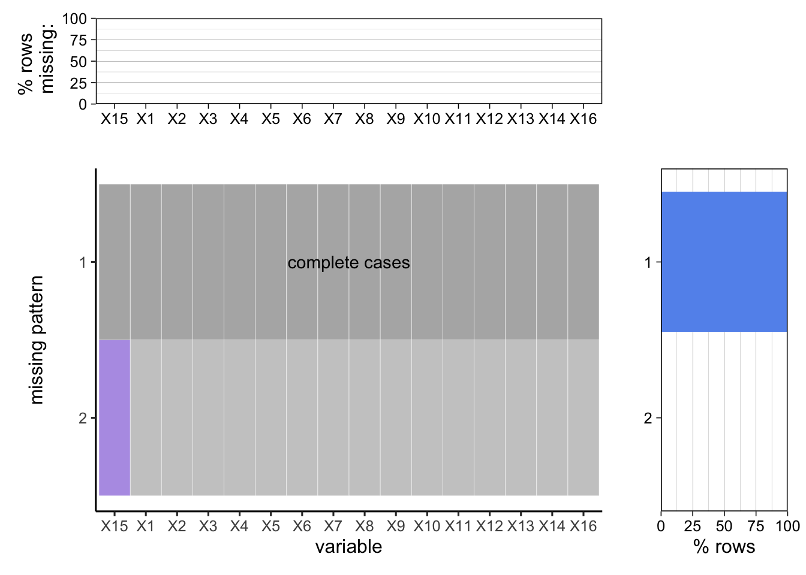

Chapter 3 Data
3.1 Sources
3.1.1 Data Background
The dataset that we used is from NY Open Data, provided by the New York State Higher Education Services Corporation. The original source can be found here: Tuition Assistance Program Dataset
Information contained in this dataset was extracted from the systems that process student application and school certification data collected by academic year, TAP College Code, school sector, and Federal School Code to facilitate matching with US Department of Education administered loan and grant program data. It is updated every November, coinciding with the publication of the HESC Annual Report.
3.1.2 Data Description
In terms of contents, this dataset provides insights about TAP award recipients by education level, sector of institution, age, income, and more in a time range of 20 academic years, from 2000 to 2020. Specifically, the raw data contains 236,475 observations with 16 variables, with details provided below:
Academic Year: Academic Year is from July 1 through June 30.
Level: U = Undergraduate G = Graduate.
TAP Level of Study: Student’s Level of Study: 2 yr Undergrad = Undergraduate 2 Year Program of Study 4 yr Undergrad = Undergraduate 4 Year Program of Study 5 yr Undergrad = Approved Undergraduate 5 Year Program of Study STAP = Supplemental Tuition Assistance Program (authorized additional aid for remedial courses) Grad = Graduate Level Program of Study.
Sector Type: Type of Institution is either Public or Private.
TAP Sector Group: Sector Group of Institution: 1-CUNY SR = CUNY Senior Colleges 2-CUNY CC = CUNY Community Colleges 3-SUNY SO = SUNY State Operated 4-SUNY CC = SUNY Community Colleges 5-INDEPENDENT = Independent Colleges 6-BUS. DEGREE = Business Degree Granting Institutions 7-BUS. NON-DEG = Non-Degree Business Schools 8-OTHER = All Other Institutions 9-CHAPTER XXII = Chapter XXII TAP Schools.
Recipient Age Group: Age of student as of July 1 start of academic year.
TAP Financial Status: Financial Status is either Financial_Dependent or Financial_Independent.
TAP Award Schedule: There are 3 awards schedules: Dependent Schedule, Independent Schedule, or Married No Dependents Schedule.
TAP Degree or NonDegree: Degree = Program of study is classified as degree granting Non Degree = Program of study is classified as non degree.
TAP Schedule Letter: Refer to Tuition Assistance Program award schedule documentation. The link is provided in the Additional Resources section after selecting the About tab.
Income by $1,000 Range: When performing data analysis, one of three income ranges can be selected. The $1,000 income range is the lowest level of granularity that is available in this dataset.
Income by $5,000 Range: When performing data analysis, one of three income ranges can be selected. The $5,000 income range is the middle level of granularity that is available in this dataset.
Income by $10,000 Range: When performing data analysis, one of three income ranges can be selected. The $10,000 income range is the highest level of granularity that is available in this dataset.
TAP Recipient Headcount: Number of recipients as measured by students receiving at least one term award during the academic year.
TAP Recipient FTEs: Number of recipients as measured by academic year Full-Time Equivalents: Full Time Equivalent is a unit that indicates the enrollment of a student in credit-bearing courses in a way that makes it comparable across contexts. An FTE of 1.0 means that the person is equivalent to 1 full-time student, while an FTE of 0.5 signals that a student is enrolled half-time.
TAP Recipient Dollars: Total TAP award dollars provided on behalf of TAP recipients attending an Institution.
3.1.3 Data Issue
From the descriptions of the 16 variables above, we can see that there are plenty of information regarding the background of an applicant. We also noticed that the TAP Recipient Dollars variable is the Total TAP award dollars, so we need to create two more columns to calculated the average TAP Recipient Dollars based on Recipient Headcount and Recipient FTEs. More details included in the following section.
3.2 Cleaning / transformation
Since the data is available in CSV format, we downloaded it and opened it directly in R. The dataset is correctly formatted, without corrupted or duplicate data. An overview of the dataset before cleaning and transforming is shown below.
## 'data.frame': 236475 obs. of 16 variables:
## $ Academic.Year : int 2020 2020 2020 2020 2020 2020 2020 2020 2020 2020 ...
## $ Level : chr "U" "U" "U" "U" ...
## $ TAP.Level.of.Study : chr "4 yr Undergrad" "2 yr Undergrad" "4 yr Undergrad" "2 yr Undergrad" ...
## $ Sector.Type : chr "PRIVATE" "PRIVATE" "PUBLIC" "PRIVATE" ...
## $ TAP.Sector.Group : chr "5-INDEPENDENT" "6-BUS. DEGREE" "3-SUNY SO" "6-BUS. DEGREE" ...
## $ Recipient.Age.Group : chr "under age 22" "age 26 - 35" "under age 22" "age 22 - 25" ...
## $ TAP.Financial.Status : chr "Financial_Dependent" "Financial_Independent" "Financial_Independent" "Financial_Independent" ...
## $ TAP.Award.Schedule : chr "Dependent_Schedule" "Dependent_Schedule" "Married_No_Dependents" "Dependent_Schedule" ...
## $ TAP.Degree.or.NonDegree : chr "Degree" "Degree" "Degree" "Degree" ...
## $ TAP.Schedule.Letter : chr "E" "E" "C" "E" ...
## $ Income.by..1.000.Range : chr "$26,001 to $27,000" "$40,001 to $41,000" "$ 8,001 to $ 9,000" "$52,001 to $53,000" ...
## $ Income.by..5.000.Range : chr "$25,001 to $30,000" "$40,001 to $45,000" "$ 5,001 to $10,000" "$50,001 to $55,000" ...
## $ Income.by..10.000.Range : chr "$20,001 to $30,000" "$40,001 to $50,000" "$ 0 to $10,000" "$50,001 to $60,000" ...
## $ TAP.Recipient..Headcount: int 3 5 1 1 3 1 691 6 1 2 ...
## $ TAP.Recipient.FTEs : num 2.037 4.654 1.019 0.517 1.556 ...
## $ TAP.Recipient.Dollars : num 6416 5764 2863 259 778 ...However, we can see that the original dataset only includes the Total TAP award dollars, we needed to transform it into two separate columns indicating the average TAP Recipient Dollars based on Recipient Headcount and Recipient FTEs. An FTE of 1.0 means that the person is equivalent to 1 full-time student. Therefore, the recipient dollars per FTEs provides a standard view of the award for a full-time student.
Specifically:
Recipient_Dollars_Per_Student = Recipient_Dollars/Recipient_Headcount
Recipient_Dollars_Per_Stu_FTEs = Recipient_Dollars/Recipient_FTEs
Finally, we convert character variables to factor variables for further analysis. With the columns renamed and rearranged, the dataset is in a good shape for visualization and analysis. An overview of the dataset after transforming is shown below.
## 'data.frame': 236458 obs. of 18 variables:
## $ Academic_Year : int 2020 2020 2020 2020 2020 2020 2020 2020 2020 2020 ...
## $ Level : Factor w/ 2 levels "G","U": 2 2 2 2 2 2 2 2 2 2 ...
## $ Level_of_Study : Factor w/ 5 levels "2 yr Undergrad",..: 2 1 2 1 1 1 2 1 2 1 ...
## $ Sector_Type : Factor w/ 2 levels "PRIVATE","PUBLIC": 1 1 2 1 2 1 1 1 2 1 ...
## $ Sector_Group : Factor w/ 9 levels "1-CUNY SR","2-CUNY CC",..: 5 6 3 6 1 6 5 7 4 7 ...
## $ Recipient_Age : Factor w/ 5 levels "age 22 - 25",..: 5 2 5 1 5 2 5 3 1 1 ...
## $ Financial_Status : Factor w/ 2 levels "Financial_Dependent",..: 1 2 2 2 1 2 1 2 1 2 ...
## $ Award_Schedule : Factor w/ 3 levels "Dependent_Schedule",..: 1 1 3 1 1 1 1 1 1 1 ...
## $ Degree_or_NonDegree : Factor w/ 2 levels "Degree","Non_Degree": 1 1 1 1 1 1 1 1 1 1 ...
## $ Schedule_Letter : Factor w/ 13 levels "A","C","D","E",..: 4 4 2 4 4 4 4 4 4 4 ...
## $ Income_Range_by_1000 : Factor w/ 81 levels "$ 1 to $ 1,000",..: 28 42 9 54 78 70 6 2 69 15 ...
## $ Income_Range_by_5000 : Factor w/ 17 levels "$ 1 to $ 5,000",..: 7 10 2 12 17 15 2 1 15 4 ...
## $ Income_Range_by_10000 : Factor w/ 8 levels "$ 0 to $10,000",..: 3 5 1 6 8 7 1 1 7 2 ...
## $ Recipient_Headcount : int 3 5 1 1 3 1 691 6 1 2 ...
## $ Recipient_FTEs : num 2.037 4.654 1.019 0.517 1.556 ...
## $ Recipient_Dollars : num 6416 5764 2863 259 778 ...
## $ Recipient_Dollars_Per_Student : num 2139 1153 2863 259 259 ...
## $ Recipient_Dollars_Per_Stu_FTEs: num 3150 1239 2810 500 500 ...3.3 Missing value analysis
An Aggregated Missing Patterns Plot is plotted to check for missing values. For visualization purposes, the column names are renamed to X1, X2,…,X16, where X15 represents TAP Recipient FTEs.

There are only 15 rows that have TAP Level of Study labeled as “Unknown” (which are not considered missing value) and 2 rows that have missing values for TAP Recipient FTEs. Since the number of these incomplete rows is comparatively small to the whole dataset, we simply removed those rows.